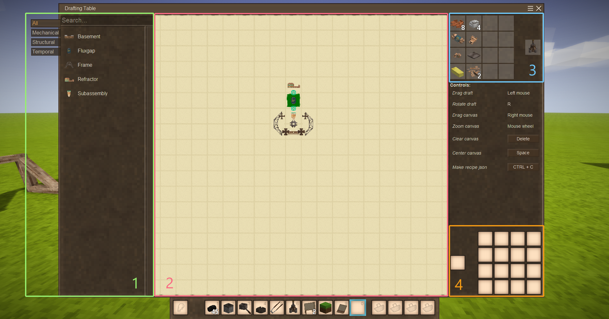

Drafting Table
A drafting table is a 'craft table' on which a drawing is made and then assembled using various items and tools.

- List of all learned drafts. Drafts can be grouped, and the side buttons can be used to switch between groups. Search supports special modes:
@modid - search for draft from mod with provided modid.#group - search for a draft that is in a group (currently only one group is supported).
- Canvas with drawing. A draft is added by holding LMB on any draft in the left list and dragging it onto the canvas. A draft is deleted by dragging it from the canvas to the left list. Drafts can be rotated and positioned anywhere on the canvas.
- Preview of the required items for the drawing and its assembly result. Appears only when a suitable recipe has been found for the drawing drawn up on the canvas. If there are multiple recipes for the same drawing, they will switch on a timer. Hovering the cursor over this area will stop switching, and a mouse wheel can be used to manually cycle through all available recipes.
- Slots for crafting ingredients and result.
This interface also simplifies the creation of recipes. Clicking the 'Make recipe json' button will copy the recipe to the clipboard (works only in creative).